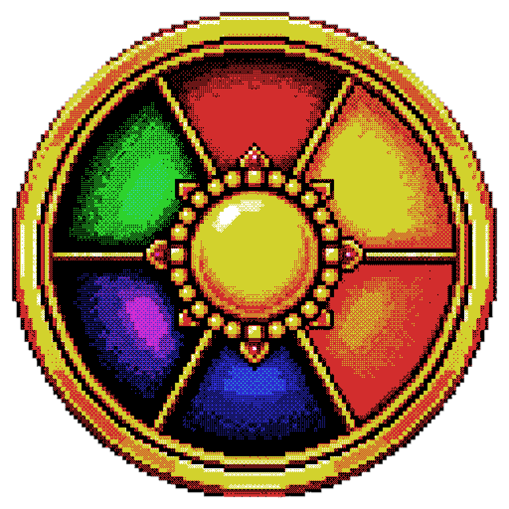

Desliza para comenzar

Al morir pasarás a Espectador y no podrás continuar hasta ser revivido. Tu inventario se conserva, pero tu equipo queda fuera de la partida mientras sigas muerto.

Los enemigos derrotados entregan ScuadCoins. Llévalas a las tiendas para comprar suministros o deposítalas en el Banco para tener una reserva segura.

El Nether, el End y la Dimensión Doom no están disponibles desde el inicio. Cada acceso se abre cuando el Realm alcanza su fase correspondiente.

Las coordenadas y la regeneración natural están activas. Los mobs no pueden destruir o alterar tus construcciones mediante griefing.
En la parte inferior izquierda puedes consultar tu saldo bancario. Cuando hay un desafío, beneficio, cacería u otro evento con duración, el mismo HUD muestra el tiempo restante.
Durante una ruleta morada puede aparecer un objetivo de cacería. Si existe un jugador marcado, su nombre se mostrará como Más Buscado y la recompensa será de 100 ScuadCoins.
Algunos objetos especiales dejan una estela de color en su slot. Úsala como referencia rápida para reconocer equipo y consumibles importantes sin abrir sus detalles.
Deposita o retira todas tus ScuadCoins. Lo depositado permanece guardado aunque mueras.
Provisiones para mantenerte con vida. Su catálogo crece conforme se revelan nuevas fases.

Compra pociones de emergencia y alquimia avanzada. Las opciones más poderosas se desbloquean con las fases.
Intercambia riqueza por recursos especiales: Almas de Jugador, reparación de armadura, tótems, perlas y experiencia.
Usa 1 Alma de Jugador para devolver a un compañero desde Espectador. El jugador revivido aparecerá junto a la fosa.
Los objetos de fases futuras permanecen ocultos hasta que el Administrador revele esa fase en esta guía.
Moneda física del Realm. Se obtiene principalmente derrotando enemigos y completando eventos.
Llave de resurrección. Compra una en la Urna de Oro y llévala a la Fosa de Almas para recuperar a un compañero.
Comida de emergencia que estabiliza tus heridas con absorción y una breve regeneración.
Velocidad III durante 20 s y Resistencia I durante 10 s. Ideal para romper una emboscada y ganar distancia.

Invisibilidad y Velocidad II durante 15 s, además de Caída Lenta durante 10 s.

Prisa II y Visión Nocturna durante 2 minutos, más Resistencia al Fuego durante 30 s.

Fortalece tu vida temporalmente y acelera la recuperación durante unos segundos.

Absorción IV durante 2 minutos y Resistencia II durante 1 minuto.

Limpia veneno, wither, debilidad, lentitud, ceguera, oscuridad, hambre, fatiga y náusea; después aplica Regeneración II.

Restaura toda tu salud inmediatamente y añade Regeneración III durante 10 s.

Aumento de Salud III durante 2 minutos y Fuerza II durante 30 s. El precio del poder es una breve Oscuridad.

Fuerza III y Velocidad II durante 30 s, a cambio de Hambre III durante 15 s.

Absorción IV y Resistencia I durante 2 minutos, además de Regeneración II durante 30 s.
Los grandes enemigos pueden entregar almas únicas. Cada alma sirve como pieza clave para mejorar una parte concreta de armadura de diamante a Netherite.

La entrega el Ghast Infernal. Se usa para mejorar el casco de diamante a Netherite.

La entrega el Giga Slime. Se usa para mejorar la pechera de diamante a Netherite.

La entrega el Emperador. Se usa para mejorar los pantalones de diamante a Netherite.

La entrega el Devastador Espectral. Se usa para mejorar las botas de diamante a Netherite.
Abre el menú de expedición a la Dimensión Doom. También puedes abrirlo con /scuad:doom.

Recurso raro de las expediciones. Puede aparecer en botines del Doom y es esencial para fabricar objetos de alto nivel.

Material necesario para transformar una pieza de Netherite en Armadura de la Perdición.


Mejora cada pieza de Netherite usando un Catalizador del Cataclismo. El set completo es irrompible y otorga Fuerza, Resistencia II, Resistencia al Fuego, Visión Nocturna y 5 corazones extra.
Recompensas de expedición
Cada 12 enemigos derrotados dentro del Doom recibes suministros de expedición. Los cofres pueden contener Coins, diamantes, Netherite, Fragmentos de Eco, Núcleos del Doom y otros objetos raros.
Si estás muerto y en Espectador, abre una lista de jugadores vivos para seguir su aventura mientras esperas una resurrección.
Abre el menú para entrar o salir de la Dimensión Doom una vez que la Fase 2 esté revelada.
El Realm avanza por fases. Cuando una nueva fase sea revelada, esta guía mostrará automáticamente la información que los jugadores ya pueden conocer.
Expediente público actual: Fase 0. Las fases posteriores permanecen clasificadas.
Día 0. El mundo permanece en Pacífico. Nether, End y Doom están cerrados. Es el momento para levantar una base, reunir comida, hierro, diamantes y una reserva de ScuadCoins.
Día 5. La dificultad sube a Normal y se abre el Nether. Comienzan a aparecer Exploradores Óseos y el mundo deja de ser seguro.
Día 40. La dificultad pasa a Difícil. Se abren el End y el Doom; aparecen Guardias Óseos, enemigos especiales y minijefes. Los no-muertos resisten el fuego y las arañas son más rápidas.
Día 60. Las arañas pueden volverse invisibles, los Creepers son mucho más veloces y llegan los Tiradores Espectrales. Los asedios se vuelven más intensos.
Día 80. Los principales hostiles ganan Fuerza y Resistencia, aparecen Verdugos Abisales y aumenta la presencia de minijefes. La alquimia de emergencia alcanza otro nivel.
Día 100. Los enemigos especiales alcanzan su máximo poder, los jefes pueden regenerarse y varias amenazas pueden coexistir al mismo tiempo.

Cada 4 horas reales gira una ruleta entre cinco colores. El rojo está reservado para los cambios de fase. Selecciona un color para estudiar sus posibles resultados.